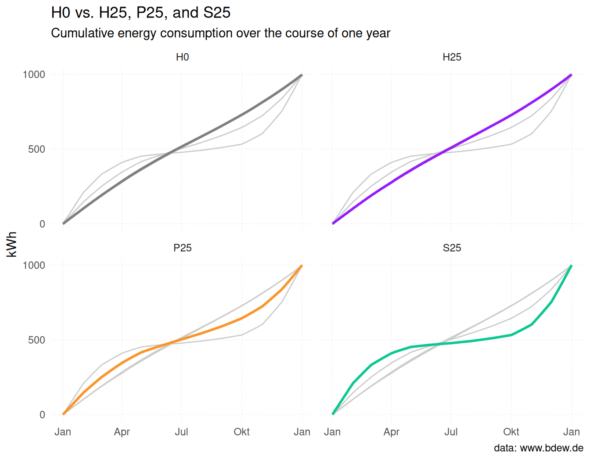
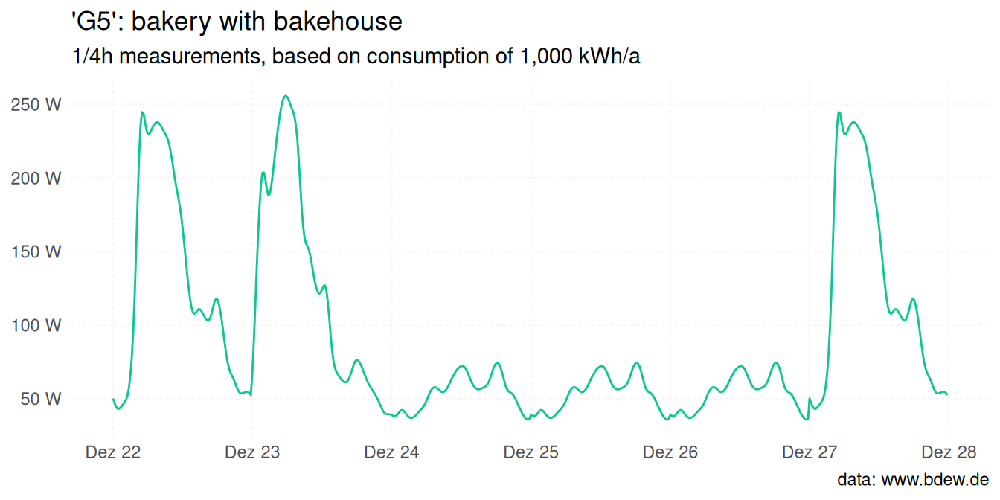
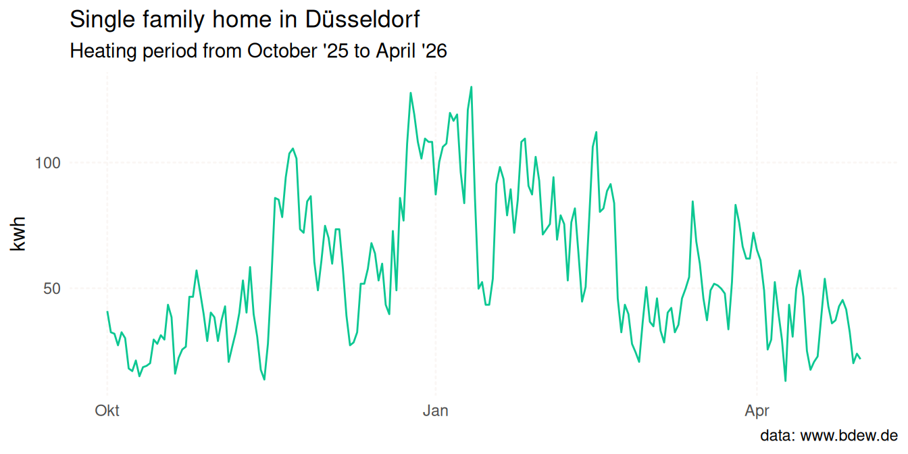
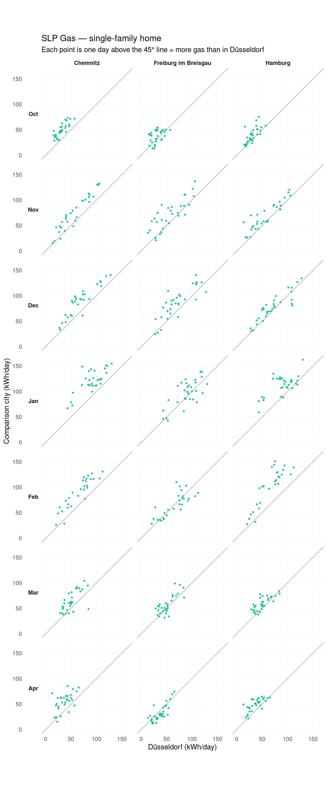

Standard load profiles (SLPs) for electricity and gas, published by the German Association of Energy and Water Industries (BDEW Bundesverband der Energie- und Wasserwirtschaft e.V.). SLPs are used by utilities, distribution network operators, and the energy industry to forecast demand for customer groups that are not continuously metered.

To learn more about SLPs for electricity, see article on Standardlastprofile Strom. To learn more about SLPS for gas and the details of the algorithm, how to fetch weather data from DWD, see article on Standardlastprofile Gas.
Installation
install.packages("standardlastprofile")Included features
-
slp_info()— descriptions for all electricity and gas profile IDs
Electricity
-
slp_electricity()— generate a 15-minute profile for any date range -
slp_electricity_profiles— dataset of BDEW electricity SLPs in tidy format
Gas
-
slp_gas()— generate daily gas consumption via the SigLinDe method -
slp_gas_coefficients()— retrieve SigLinDe coefficients for gas SLPs -
slp_gas_kundenwert()— derive the customer value (German: “Kundenwert”) from a reference temperature series -
slp_gas_siglinde()— low-level SigLinDe function, can be useful for custom or region-specific SigLinDe coefficients -
slp_gas_weekday_factors()— retrieve weekday factors for gas SLPs
Electricity
The dataset slp_electricity_profiles contains 26,784 observations across 5 variables:
-
profile_id: load profile identifier -
period:"summer","winter", or"transition"for 1999 profiles; a lowercase month name for 2025 profiles -
day:"workday","saturday", or"sunday" -
timestamp: quarter-hour start time in"%H:%M"format -
watts: average electric power, normalised to 1,000 kWh/a
str(slp_electricity_profiles)
#> 'data.frame': 26784 obs. of 5 variables:
#> $ profile_id: chr "H0" "H0" "H0" "H0" ...
#> $ period : chr "winter" "winter" "winter" "winter" ...
#> $ day : chr "saturday" "saturday" "saturday" "saturday" ...
#> $ timestamp : chr "00:00" "00:15" "00:30" "00:45" ...
#> $ watts : num 70.8 68.2 65.9 63.3 59.5 55 50.5 46.6 43.9 42.3 ...1999 profiles
Based on an analysis of 1,209 load profiles of low-voltage electricity consumers in Germany1:
-
H0: households -
G0–G6: commercial -
L0–L2: agriculture
2025 profiles
An updated set published by BDEW in 2025, reflecting changes in consumption patterns since the original study. Unlike the 1999 profiles (three seasonal periods), the 2025 profiles provide values for each calendar month:
-
H25,G25,L25: updated household, commercial, and agriculture profiles -
P25: households with a photovoltaic (PV) system -
S25: households with a PV system and battery storage

The chart below compares cumulative energy consumption of the 2025 household profiles against H0 over a full year. H25 tracks H0 closely; P25 and S25 flatten from spring through summer as solar generation and storage reduce grid draw.

Generate a profile
slp_electricity() returns a data frame with one row per 15-minute interval:
G5 <- slp_electricity(
profile_id = "G5",
start_date = "2023-12-22",
end_date = "2023-12-27"
)
head(G5)
#> profile_id start_time end_time watts
#> 1 G5 2023-12-22 00:00:00 2023-12-22 00:15:00 50.1
#> 2 G5 2023-12-22 00:15:00 2023-12-22 00:30:00 47.4
#> 3 G5 2023-12-22 00:30:00 2023-12-22 00:45:00 44.9
#> 4 G5 2023-12-22 00:45:00 2023-12-22 01:00:00 43.3
#> 5 G5 2023-12-22 01:00:00 2023-12-22 01:15:00 43.0
#> 6 G5 2023-12-22 01:15:00 2023-12-22 01:30:00 43.8
Public holidays
Both slp_electricity() and slp_gas() use the same holiday logic: nine nationwide German public holidays are treated as Sundays by default:
- New Year’s
- Good Friday
- Easter Monday
- Labour Day
- Ascension Day
- Whit Monday
- German Unity Day
- Christmas Day
- Boxing Day
State-level holidays are not included because they vary by state and year. Use the holidays argument in either function to supply your own dates — the built-in data are then ignored entirely. See the electricity article for an example of how to fetch state-level holidays from the nager.Date API.
Gas
slp_gas() implements the BDEW/VKU/GEODE synthetic procedure (SigLinDe method) for daily gas consumption. The gas consumption on any particular day is influenced by three factors:
- outside temperature
- personal preferences (
kundenwert) - the day of the week
slp_gas() hence takes a date vector for which the gas consumption should be calculated, a vector of daily mean temperatures and a kundenwert (customer value in kWh/day), together with one of 15 gas profile IDs.
Pass dates and temps to slp_gas() together with the kundenwert.
The
kundenwertof 55.1 kWh/day is itself derived once, from the customer’s annual consumption and a reference temperature series. See the gas article for that step and the full method.
The result of slp_gas() is a data frame with three columns: profile_id, date, and kwh which is the daily gas consumption:
HEF <- slp_gas("HEF", dates, temps, kundenwert = 55.1)
head(HEF)
#> profile_id date kwh
#> 1 HEF 2025-10-01 40.95047
#> 2 HEF 2025-10-02 32.50304
#> 3 HEF 2025-10-03 31.91795
#> 4 HEF 2025-10-04 27.32729
#> 5 HEF 2025-10-05 32.50304
#> 6 HEF 2025-10-06 30.17767
In the example above we assumed a single-family home (profile HEF) in Düsseldorf.
In the following graph, we compare the same customer (i.e. we set the kundenwert) for the same period – October 2025 to April 2026 – with three other locations. This allows us to isolate the influence of the outside temperature on gas consumption in these cities:
- Chemnitz,
- Freiburg im Breisgau, and
- Hamburg.
Each point represents a single day in the period from 1 October 2025 to 30 April 2026. Points above the 45° line indicate that the customer would have consumed more gas than in Düsseldorf. We can see that this winter was colder in all three cities than in Düsseldorf, so all the points lie above the line – most notably in Chemnitz, least so in Freiburg im Breisgau, with Hamburg in between:

For a detailed explanation of the SigLinDe parameters and the full climate zone comparison, see the gas articles on the package website.
Sources
- Electricity SLPs: https://www.bdew.de/energie/standardlastprofile-strom/
- Gas SLPs: https://www.bdew.de/energie/standardlastprofile-gas/
Code of Conduct
Please note that this project is released with a Contributor Code of Conduct. By participating in this project you agree to abide by its terms.